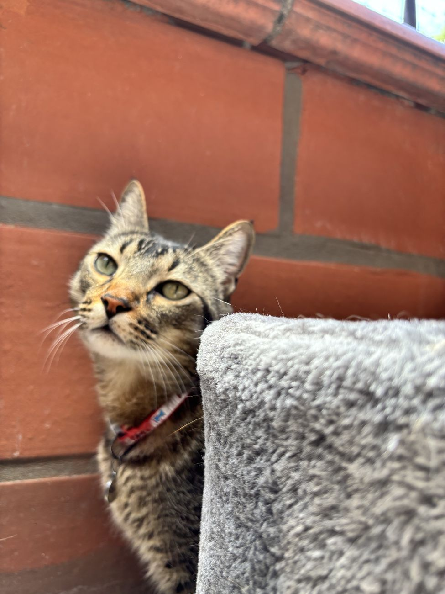
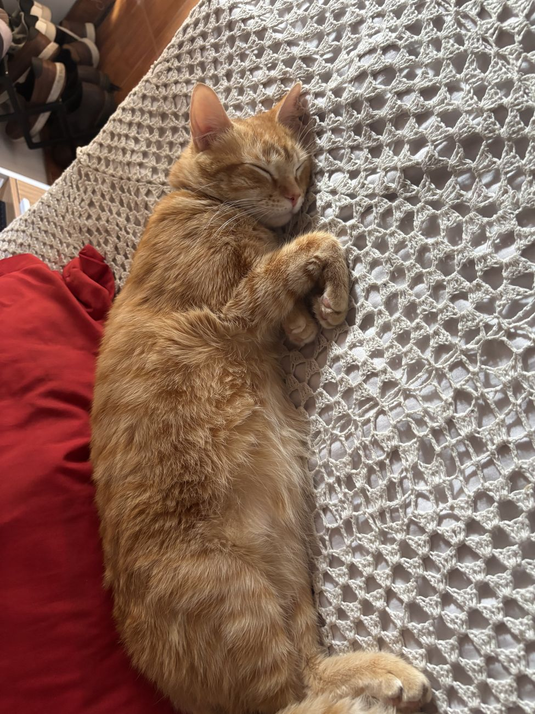

Mis gatos
Tengo dos gatos, y son muy cercanos a mí. Pasar tiempo con ellos es de mis planes favoritos.

Félix Antonio Betancur Ramírez
4 años, casi 5Félix es muy extrovertido con los humanos y muy introvertido con otros gatos. A veces parece un perrito: siempre que lo llamo por su nombre, llega. Creo que sabe que soy su mamá.
Todas las noches duerme conmigo, al lado de mi cara o sobre mis piernas. Es tiernísimo, y le enseñé a dar besitos.
- Extrovertido con humanos
- Tímido con otros gatos
- Da besitos
- Duerme a mi lado

Joselito Margarito Betancur Ramírez
2 años, casi 3Joselito es el menor y tiene una personalidad muy de gato naranja: es raro, curioso y le tiene miedo a todo. Se asusta hasta con el mínimo sonido y desconfía de cualquier humano que no sea de casa, pero con las personas de la casa es muy cariñoso.
Eso sí, le gustan los otros gatos. Cuando agarra confianza con uno, intenta jugar con él todo el día.
- Curioso
- Asustadizo
- Cariñoso en casa
- Juguetón con otros gatos